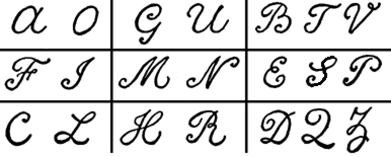
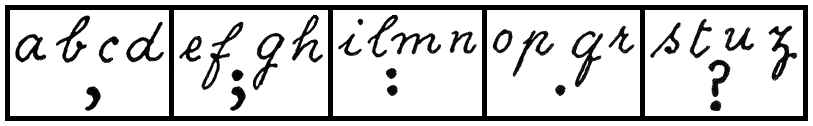
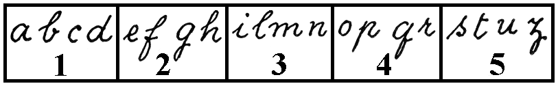
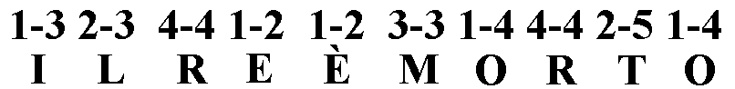
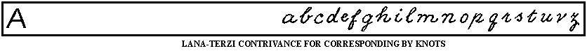
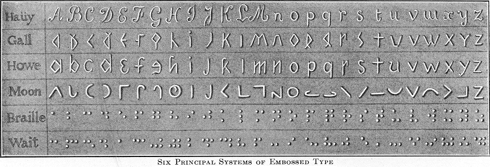
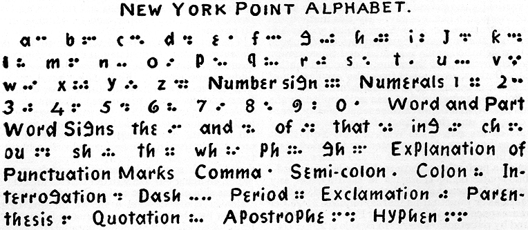
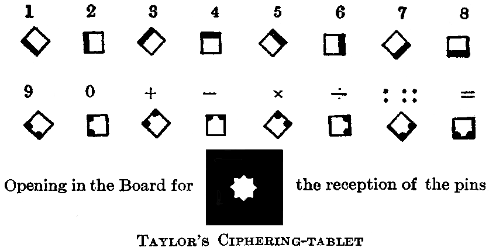
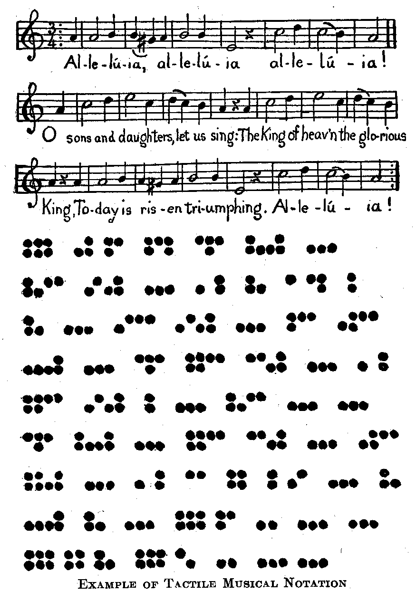

|
| A B C D E F G H I J K L M N O P Q R S T U V W X Y Z |
Although the education of the blind as a class dates back no further than the year 1784, historians and statisticians generally admit that the affliction which it tends to relieve was no less prevalent before than it has been since that date. Indeed, so far from having increased, blindness appears to have in a marked degree decreased during the last hundred years.
An exact statement of the number of blind persons in all parts of the inhabited earth is of course impossible. The estimates which publicists have formed upon the basis of census returns, as also those derived from the observation of travellers, give the ratio of blind persons to the whole population in Asia 1 to 500; in Africa 1 to 300; in Europe 1 to 1094 (the ratios for seventeen countries of the last-named division being, approximately: England, 1 to 1235; Scotland, 1 to 1118; Ireland, 1 to 870; France, 1 to 1194; Germany, 1 to 1136; European Russia, 1 to 534; Austria, 1 to 1234; Hungary, 1 to 952; Italy, 1 to 1074; Spain, 1 to 835; Denmark, 1 to 1248; Sweden, 1 to 1262; Norway, 1 to 795; Finland, 1 to 689; Belgium, 1 to 1229; Switzerland, 1 to 1325; Bulgaria, 1 to 321). For the other great geographical divisions no data are available for even a fairly satisfactory approximation. (See below Blindness in the United States.) Consistently with the foregoing ratios, and with such conjectures as may be hazarded for America, Australasia, etc., it may be estimated that the number of blind persons now living in all parts of the world is not far short of 2,500,000. A careful study of the figures shows that blindness prevails most in tropical, and least in temperate, regions; more in the Eastern than in the Western Hemisphere. In the temperate climates of the North the blind are comparatively few; nearer the Arctic Circle, the glittering snows, the alternation from the brilliant nights of the Arctic summer to the prolonged darkness of the winter, and other conditions affect the visual organs unfavourably, while in the torrid zones the glare from desert sands and the intense heat of the sun occasion many diseases, resulting in either total or partial loss of sight.
In the Western Hemisphere a different ratio seems to obtain. The data, however, for an accurate comparison are wanting, except in the United States (lying between the 24th and 49th parallels of north latitude), where, according to the census of 1900, the ratio of the blind to the entire population is 1 to 1178. In 1890, the ratio was 1 to 1242. The number of blind persons in the United States originally returned by the enumerators of the Federal Census Bureau, 1900, was 101,123; by subsequent correspondence with individuals, this number was reduced to 64,763; but the special report on "The Blind and the Deaf" states that this should be considered only as a minimum, the correct figure being probably 80,000 and possibly over 100,000. Of the minimum 64,763 reported in the Census, 57.2 per cent were males, 42.8 per cent females; about 13 per cent were under, and about 87 per cent over, twenty years of age. Of the juvenile 13 per cent (8308), those entirely or partially blind before the age of two years numbered 8166.
In a careful study of the causes of blindness Cohn of Breslau estimates that among 1000 blind there are only 220 absolutely unavoidable cases, 449 possibly avoidable, and 326 (or nearly one-third) absolutely avoidable. Blindness may result from accident or from disease. The diseases most often productive of blindness are: ophthalmia neonatorum, or inflammation of the eyes of the new-born;. trachoma, often called "granular lids", and glaucoma, and atrophy of the optic nerve. Blindness from ophthalmia of the new-born is so widespread that, according to Magnus, out of 2528 cases of total blindness in Germany, 10.88 per cent were due to this cause. Among the blind under the age of twenty the proportion is as high as 30 per cent. In the United States, between 6000 and 7000 persons have thus become blind. Thanks to improved sanitary conditions in homes, to more intelligent care on the part of midwives and nurses, and more skilful medical treatment, ophthalmia in certain countries appears as a cause of blindness in only seven per cent of the total number of cases, as against the 41 per cent recorded fifty years ago.
The function of sight can, to a certain extent, be replaced by the use of the other senses. Stimulated by necessity and trained by education, touch, hearing, and smell take the place of vision. Having no sight to distract them, moreover, the blind cultivate their remaining senses all the more effectually. As for the exercise of their mental faculties, although wanting some of the means by which various impressions are received, and attention is aroused, the blind are as capable of reflection and reason as other human beings, while, owing to their condition, they are more frequently forced to close mental application. That blindness does not necessarily render its subjects intellectually inferior, may also be inferred from the number of famous persons who were blind from childhood or early youth. A list of such examples might with little difficulty be produced, long enough and important enough to show how erroneous is the idea that the physical darkness of the blind is necessarily associated with intellectual darkness.
That no attempt was made in ancient times to instruct the blind, or in any way to cultivate their intelligences, was mainly due to the prevalent error as to their mental capacities. The same error, generally speaking, produced the same unfortunate results in Christian civilization until as late as the end of the eighteenth century. On the other hand, the Church, from the earliest ages, at least made provision for their corporal needs, while here and there attempts were made to teach them various handicrafts. Among the most noted of the hospices for the poor and afflicted which began to appear in all parts of Christendom almost as soon as persecution ceased, was that established in the fourth century by Saint Basil at Cæsarea, where special provision was made for the blind, and guides were supplied for them. In the fifth century, Limnæus, a hermit of Syria, received, in cottages especially built for them, the blind of the surrounding country, whom he taught, among other things, to sing the praises of God. Two centuries later, towards the year 630, a refuge exclusively for the blind, such as was called in the Middle Ages a typhlocomium, was founded at Jerusalem.
In the West, the Church was animated with similar charity. Early in the seventh century, St. Bertrand, Bishop of Le Mans, founded a hospice for the blind at Pontlieu, in the north-west of France. In the eleventh century, William the Conqueror, in expiation of his sins, founded a number of institutions; among: them four hospices for the blind and other infirm persons at Cherbourg, Rouen, Bayeux and Caen respectively. Towards 1260, St. Louis, King of France, established at Paris the Hospice des Quinze-Vingts, where he housed and instructed three hundred blind persons. The inmates of the hospice, after the example of the students and the craftsmen of the day, formed among themselves a distinct brotherhood, to whom the saintly king gave special statutes and privileges. It is noteworthy that, in spite of the changes of government, the "Hospice des Quinze-Vingts" has survived to this day. A similar institution, though less extensive, was established and endowed at Chartres by King John the Good in 1350. Provision was made for 120 blind persons. For various reasons, however, the number of inmates dwindled till, in 1837, according to Dufau, there were but ten. A hospice for the blind is said to have been erected (1305) at Bruges, in Flanders, by Robert de Béthune, in gratitude for the courage displayed by the inhabitants in repelling (1300) an invasion of Philip the Fair. A similar foundation was made at Ghent by Peter Van der Leyen about 1370. Brotherhoods of the blind were formed, particularly at Chartres, Caen, Châlons, Meaux, Padua, Memming, Frankfort, and Hull. That the inmates of these institutions received other suitable instruction besides that in the Catechism and in trades there can be no doubt. So desultory, however, were these attempts to give the blind a modicum of education, and so inadequate were the means employed, that the problem of their special education remained unsolved. No one had as yet suggested the idea of providing a permanent literature for them. As early as the sixteenth century attempts were made to devise special processes, but these attempts, so far as we know, met with very little success.
Among others, Girolamo Cardano (1501-1576), an Italian mathematician, had pointed out a way of teaching the blind to read and write by the sense of touch. They were to trace with a steel bodkin or stylus the outline of each of the letters of the alphabet, engraved on metal, until they could distinguish the letters by the sense of touch and reproduce them on paper. Cardano, however, failed to suggest how to write on a straight line with uniformity of space between the lines. In 1575 Rampazetto produced at Rome prints in intaglio from letters carved in wood. His invention was dedicated to St. Charles Borromeo. In 1580, under Philip II, to whom he dedicated his invention, Francesco Lucas, at Madrid, engraved letters in wood for the instruction of the blind; but the letters being sunk in the wood, the outlines could not as readily be followed with the finger-tips. In 1640, Pierre Moreau, a notary at Paris, had movable letters cast for the use of the blind, but for lack of means was unable to follow up his undertaking. In his work, "Deliciæ mathematicæ et physicæ, published at Nuremherg in 1651, George Harsdörffer describes how the blind can recognize, and be taught to name and imitate, letters engraved in wax. Padre Francesco Lana-Terzi, the same Italian Jesuit who anticipated by more than a century the system of lip-reading for deaf mutes, also suggested, as an improvement on Cardano's invention for the blind, a guide consisting of a series of wires and strings arranged in parallel lines at equal distances from one another, to secure straight writing and uniformity of space between the lines. Besides this, Lana-Terzi describes, in his "Prodromo", an invention of his own, by which the blind may be taught to correspond with each other by a secret code. We have looked in vain in works of reference for any description of this cryptographic device. It is so simple that it can be learned in a few hours. Instead of compelling a blind person to learn how to form all the letters of the alphabet, the three methods pointed out by Lana-Terzi demand only a tactual knowledge of the letters, familiarity with their positions in their respective sections, and a little skill;
Suppose the blind correspondent wishes to send the cipher message, Son prigione (I am a prisoner), he will turn to his tablet,

and ascertain by touch that the letter s is the second of those enclosed within the lines forming the figure . He will trace this figure with a pencil, and, to indicate that it is the second letter in the above figure, he will write, either above, or below, or within it, two dots, thus . The message in full is as follows: —
= SON PRIGIONE
The letters of the alphabet are embossed on a wooden or metallic tablet and distributed in any order whatever into five or more sections, which are indicated by lines in relief. Each section is distinguished from the others by one of the five principal punctuation marks, formed, like the letters, in relief.

The position of each letter in its own section is indicated by one of the first four numerals according to the order in the section. Thus, the message, Il re è morto (the king is dead), would be written as follows: —
Instead of designating by punctuation marks the different sections into which the letters are distributed, they may be indicated by numerals, thus: —

By this method the blind person would have to learn how to form only the first five numerals. Thus the above message, Il re è morto, according to this method, would be written as follows: —

the first numeral indicating the position of the letter in the section, and the second numeral the section itself.
To enable the correspondent to make out for himself the answer to his message or communication, Lana-Terzi proposes the following plan: Let each of the correspondents have a table or long strip of wood on which are engraved or embossed the letters of the alphabet arranged in serial order at equal distances from each other, as in the diagram here given.

Suppose now that a person who is not blind should wish to send to his blind friend this message: Il nemico ti trama insidie (the enemy is trying to ensnare you). Let him take a piece of thread or twine, apply the end of it to the extreme point of the tablet, extend the thread over the space from a to the first letter i of the message and make a knot at that point; for the second letter, apply this first knot to point a, extend the thread over the space from a to the letter l, make, as before, a knot at that point, and so on for the rest of the letters. It will readily be understood how the blind person, to whom the roll of knotted thread or twine is sent, can make out the communication by applying the various thread lengths over the distances indicated by the knots, and thus discover each letter of the message. The blind correspondent, in his turn, can easily send by this same method whatever communication he wishes.
A few years after the publication of Lana-Terzi's "Prodromo", Jacques Bernouilli, being at Geneva in 1676, taught Elizabeth Waldkirch to read by a method not unlike that of Cardano. The young lady made such progress that after four years she was able to correspond with her friends in German, French, and Latin, all of which she spoke fluently at the age of fifteen. She knew almost all the Bible by heart, was familiar with philosophy, and was an accomplished musician.
About the year 1711 the first known attempt was made to construct a tactile ciphering-tablet or apparatus by which all the operations of arithmetic might he performed and recorded. This was the work of Nicholas Saunderson, who became blind when one year old. So distinguished was this blind mathematician that he was appointed Lucasian Professor of Mathematics in the University of Cambridge. The Abbé Claude-François Deschamps (1745-91), in his treatise on the education of the deaf and dumb, is said to have also sketched the outlines of the art of teaching the blind to read and write. Diderot in his "Lettre sur les aveugles", which appeared in London in 1749, and for which he was condemned to prison, mentions his interview with Lenôtre, better known as "The Blind Man of Puisaux". Among other remarkable things related of him is the teaching of his son, though not blind, to read by means of raised letters. Between 1772 and 1784 we read of the earliest attempt to make maps in relief for the blind. This invention is ascribed to R. Weissenburg, of Mannheim, who was partially blind at five years of age, and totally at fifteen. Whether any of the credit is due to Weissenburg's teacher, Christian Niesen, cannot be ascertained. Though Diderot was among the first to call special attention to the condition and wants of the blind, and to make them generally known through his famous letter, yet neither he, nor Leibniz, nor Reid, nor Condillac, nor any of the Encyclopedists went beyond abstract psychological speculation. None of them proposed any measure of practical utility or relief nor devised any plans for the instruction and training of sightless persons.
The modern era in the history of education of the blind opened in 1784 — nearly three centuries after the desultory and apparently ineffectual attempts of Cardano and others — when Valentin Haüy (1745-1822) set himself to do for the blind what the Abbé del' Epée had done for deaf mutes. It was in June, 1784, that Haüy met, in one of the churches of Paris, a young mendicant named Lesueur, who had been blind from his birth. Having already spent many years in studying the theory, Haüy took this young waif to be the subject of his first practical essays in teaching the blind. Lesueur was promised a regular daily allowance in place of the income which he was supposed to earn by begging. Before long the number of Haüy's pupils increased to twelve, then to double that number, and finally to fifty. His school was at first a day-school, to which children of both sexes were admitted. When Haüy, in 1786, exhibited the attainments of twenty-four of his best pupils at Versailles, Louis XVI and his court were in raptures at the wonderful novelty of children without sight reading, writing, ciphering, doing handicraft work, and playing orchestral music. So great was the interest which this and similar exhibitions aroused, and so generous the patronage of the king and the public which they secured for his school, that Haüy soon had sufficient means to board his pupils. From the very beginning the institution had the triple character of a school, a workshop, and an academy of music; and to this day these three departments have been maintained with such a record for efficiency that the institution founded by Haüy has served as the model for most of the many others in both hemispheres. But true intellectual culture for the blind dates only from the day when reading by touch was made possible. To Haüy is due the credit of having provided a system of tactual printing and a permanent literature for the blind. In the light of a century's progress and of better systems of printing and writing invented since his day, the shortcomings of Haüy's print in relief may lessen the value of his invention, but, in fairness to his memory, it must be remembered that Haüy alone succeeded in making practical for the blind as a class what others before him had merely foreshadowed, or had successfully applied only in individual instances. In spite, therefore, of the derogatory claims made by two or three writers, and notwithstanding that he himself admitted having seen a letter printed by Theresa von Paradis from type made for her by von Kempelen, the fact remains that no one before Haüy had ever tried seriously to make printing available for the blind; to no one before him had the idea occurred of printing books for the blind, or of establishing libraries of literature printed in relief. The movement originated by him has resulted in the establishment in all civilized countries of institutions of learning and industrial training schools for the blind. Before the close of the eighteenth century, a period of only sixteen years, four such institutions had sprung up in Great Britain, viz., in Liverpool (1791), in Edinburgh (1793), in Bristol (1793), and in London (1799). Other countries were not slow in following the example. The following table shows what the leading countries of Europe and America have done for their blind during the nineteenth century: —
| First Institute founded in the year | Number of Blind | Number of Educational Institutes | Number of Trade Schools and Asylums | |
| France | 1784 | 32,340 | 24 | 10 |
| England | 1791 | 26,330 | 24 | 54 |
| Scotland | 1793 | 4,000 | 5 | 2 |
| Austria-Hungary | 1804 | 41,400 | 11 | 17 |
| Germany | 1806 | 49,570 | 34 | 48 |
| European Russia | 1807 | 221,208 | 37 | 6 |
| Sweden | 1808 | 4,100 | 3 | 5 |
| Switzerland | 1809 | 2,500 | 4 | 5 |
| Ireland | 1810 | 5,120 | 6 | 7 |
| Denmark | 1811 | 1,961 | 2 | 2 |
| Spain | 1820 | 21,000 | 11 | 5 |
| United States | 1831 | 64,763 | 44 | 24 |
| Belgium | 1836 | 4,935 | 8 | 4 |
| Italy | 1838 | 30,210 | 19 | 5 |
| Norway | 1861 | 2,816 | 2 | 1 |
In nearly all the countries referred to in the foregoing table, most of the schools for the blind maintain three distinct departments: a literary department, a department of music, and an industrial department. The rank of these institutions is higher or lower from an educational point of view according as more or less prominence is given to literature and music as compared with industrial or manual training. In the leading schools the literary department embraces kindergarten, primary, secondary, and, in a few instances, collegiate education; the department of music embraces primary, secondary, and collegiate education; while the industrial department embraces the teaching of handicrafts, varying in kind according to age, sex, and country. The courses of study in the literary department are generally the same as those pursued in the public high schools of the respective countries. The work in the department of music varies from instruction in the mere elements of music to thoroughly organized courses of study and highly specialized instruction in the science and art of music. In the industrial department the chief trades are: in the male department, piano-tuning, wood-carving, the making of baskets, mats, matting, brooms, and mattresses, chair-caning, hammock-work, and upholstery; in the female department, basket-making, knitting, hand- and machine-sewing, crocheting, fancy work of various kinds.
In the experimental stages of education, there was a tendency in almost all the schools for the blind to make the industrial department the most prominent feature. The lack of books, of adequate educational appliances, and of definite methods, the comparative ease in teaching some one or other of the simpler trades, the want of technical experience on the part of instructors, the dependence upon manual occupations and mechanical arts for self-support, the readiness to be swayed by the utilitarian principle of training the blind for the active duties and occupations opening the way to self-maintenance and independence — these and other similar considerations were strong arguments in favour of industrial training, to the neglect and detriment of the prime and essential work of education. Of late years, however, a marked change has been wrought in the ideals pursued in the education of the blind. Owing to the increase of general intelligence, on the one hand, and the steady decrease in value of manual labour, on the other hand, educators of the blind have come to realize that it is not technical skill, or ability to work successfully at one or more of the usual trades, but only a broad and liberal scheme of education that will release the blind from the bondage of dependence, uplift them as a class, and raise them to a level of usefulness and independence. In consequence of the extensive employment of machinery in almost every department of human activity, there has sprung up among educators of the blind a growing conviction that the only field in which the sightless can hope in the future to compete successfully with the seeing is a field of thought where the intellect can have free play and where blindness will be no hindrance to advancement and success. The blind need, therefore, at least as good an education as the seeing. The question as to whether they are capable and entitled to such an education has not been settled in the same manner in all countries. In many of the European institutions the prevailing idea is that, as a class, the blind must necessarily remain at the foot of the social scale, forever dependent upon the more fortunate classes, and that what is done for them is rather in the spirit of favour and charity than as of strict obligation. In the United States the education of the blind rests on a different basis. As modern methods of instruction have proved the possibility of imparting to the normal blind child practically the same education as to other children, it is generally acknowledged that the blind, as a class, have an equal right with the seeing to share in all the educational benefits which are provided for every child in the commonwealth; and since this education cannot for obvious reasons be given them in the common schools, special provision should be made for their education in distinct institutions, public or private.
Three centuries and a half elapsed after the invention of printing before any attempt to make printing available for the blind as a class was successful. Whatever information and inspiration may have been drawn by the ingenious inventor from special processes devised before his day, the credit of having first made reading by finger-touch possible must be accorded to Valentin Haüy (see above). The first book embossed by Haüy for the use of the blind was, according to Guadet, his "Essai sur l'éducation des aveugles" (1786). This book was translated into German by Michel, and into English, in 1795, by the blind poet Blacklock. The style of type adopted by Haüy was the French script, resembling the legal manuscripts of the time. The capital and small letters were respectively fourteen and seven and a half millimetres high. The book was a quarto of 111 pages, printed on one side only, two pages being gummed together back to back, to preserve the relief. The pages were embossed from metal type by the blind children of Haüy's school under the direction of Clousier, the court printer. While this invention won unstinted praise for Haüy, he himself, when he heard his achievements compared to those of the Abbé de l'Epée, modestly protested, "I only fit spectacles, while he bestows a soul." From 1806, the time of Haüy's departure for St. Petersburg, to 1854, when line-print was superseded by point-print, the type used at the Institution des Jeunes Aveugles at Paris, varied between the French script, the Italic, and Roman capitals.
Printing for the blind had been used in France for forty-three years, in Austria for eighteen, in Prussia for twenty-six, before it was used in England; Haüy's system of printing, it is claimed, was introduced into England by Sir Charles Lowther, to whom it was suggested by a copy of one of the books printed at the Institution des Jeunes Aveugles, and purchased for him by his mother, he being himself blind. In 1826, James Gall, of Edinburgh, who had seen specimens of books embossed at the Paris institution, set himself to improve the alphabet, by making it more perceptible to the touch. In 1827 he printed a small book in an angular modification of the common English alphabet. It is said to have been the first English book printed for the blind in England, and naturally great interest was excited when it was found that the blind could read it easily with their finger-tips. Between 1828 and 1838 no fewer than 20 styles of embossed printing were brought out in Great Britain. Of these, however, only six obtained recognition: those of Haüy, Gall, Fry-Alston, Lucas, Frere, and Moon. Haüy's script was adopted by Sir Charles Lowther in his publication, in 1834, of the Gospel of St. Matthew. Though Gall modified the common characters of the alphabet to make them more easily distinguishable by touch, he did not believe that arbitrary characters would ever be universally adopted, maintaining that these books should be legible to both blind and seeing. Besides two or three booklets previously embossed, Gall printed, in 1832, the Gospel of St. John. The Fry-Alston system of embossed printing is the plain upper-case Roman without ceriphs or the lighter strokes, and was devised by Dr. Edmund Fry and adopted by Alston at the Glasgow Institution for the Blind, of which he was principal. In 1832 the Scottish Society of Arts offered a gold medal for the best system to produce cheapness and tangibility in connexion with an alphabet suited alike to the fingers of the blind and to the eyes of the seeing. Nineteen different alphabets, seventeen of which were of a purely arbitrary character, were submitted to the society between 9 January, 1832, and 24 October, 1833. After much deliberation and a series of rigid tests, the medal was awarded (after Dr. Fry's death) to Alston, 31 May, 1837. From the award made to Dr. Fry's alphabet, the Scottish Society of Arts evidently shared the idea of Haüy and of other advocates of the Roman letter that in the education of the blind everything should be done to establish a bond of vital unity between them and the seeing and to lessen the isolation which arbitrary systems of print would only increase. As Alston's type was rather small and not very legible, his system did not stand the test of time. Lucas invented a stenographic system formed of arbitrary characters and of numerous contractions. In this system the Gospel of St. John and the Acts of the Apostles were printed in 1837 and 1838 respectively. Frere devised a phonetic system which he himself describes as a "scientific representation of speech". It Consists of 34 characters indicating each of the simple sounds in speech. Frere was the first to introduce (1839) the "return lines", in which the reading is alternately from left to right and from right to left, and the letters themselves are reversed in the lines from right to left. He also devised an ingenious system of embossing from stereotype plates; which invention was, at the time, the greatest improvement in embossing since the days of Haüy.

The larger part of the Old and portions of the New Testament were printed in Frere's system. Dr. Moon of Brighton, whose system is used more than any other by the adult blind, at least in England, devised, towards 1845, an alphabet formed of more or less arbitrary characters, which either resemble or suggest a resemblance to the Roman letters which they represent. He also adopted, with a number of slight alterations, Frere's "return tines" and his method of stereotyping. The first book in Moon's system appeared in 1847. The printing of the Bible was begun in 1848 and completed in 1858. Moon's books, though easy to read owing to their large type, are very bulky and expensive; 56 volumes are required for the Protestant edition of the Bible, which omits a number of books contained in the Catholic edition. The chief defects of the Moon system are that it is not a writable system and that it lacks a musical notation. It is useful chiefly for adults whose finger-touch has been dulled by age or manual labour.
Between 1809, when embossed printing, of which he claimed to be the inventor, was begun by Klein, the founder of the first school for the blind at Vienna, and 1841, when Knie, principal of the institution for the blind at Breslau, introduced the Braille system into Germany, three styles of embossed printing, known as the Stachel-, Press-, and Punktierte Typendruck (the needle-, line-, and punctured print) had been used in Germany, Austria, Holland, Switzerland, and Denmark. These systems were different forms of the upper or lower case or of both upper and lower case, of the Roman letters. Owing to the size of the letters, the books embossed in other parts of Europe were much bulkier than those of like content in France or in England. For a long time after the introduction of the Braille system into Germany, line-print was retained, even where Braille was adopted. it was not until 1876 that interest began to be aroused in regard to uniformity of embossed printing, in consequence, no doubt, of the movement inaugurated in England by the British and Foreign Blind Association in favour of Braille.
From 1832, when the first school for the blind was opened in the United States to 1860, when Dr. Pollack introduced Braille in the Missouri school (there being then as many as twenty-one institutions for the blind in this country), two systems of printing were in vogue. The first was that of Dr. Howe, the head of the Boston school for the blind, and the second that of Mr. Friedlander, the principal of the Philadelphia school. Dr. Howe's system was the angular lower case Roman and Mr. Friedlander's system the Roman capitals of the Fry-Alston type. In 1835 Dr. Howe published several books in the Boston letter; Mr. Friedlander's Roman capital was not adopted in Philadelphia until 1837. From an educational as well as from an economical point of view, it is a matter of regret that, for the lack of concerted action between the principals of the Boston and the Philadelphia schools, two systems of print should have been imposed at the very outset on the country. From 1837 to 1853 the two systems flourished in their respective spheres without any agitation regarding uniformity of type. In 1851 the Boston line-print was given the preference over all other embossed systems at the London exhibition of industries of all nations. This award, made twenty-six years after the appearance of Braille in France and one year after the adoption of the new system by the Paris institution for the blind, shows how deeply rooted was the theory prevailing since Haüy, that the adoption of any system not resembling in form and appearance the letters in common use would be prejudicial to the best interests of the blind by furthering their segregation from the seeing. A comparison between the leading systems of line-letter print which obtained recognition in France, England, and the United States shows that Haüy's system gave 365 letters on 50 square inches of surface; Gall's, 526; Alston's, 891; Friedlander's (from 1833 to 1834), 290, and 826 after 1836; Howe's, 702 and by a further improvement, it is claimed, 1067 letters.
In spite of the perfection to which some of the line-letter systems had been brought as regards compactness, a careful study of the functions and limitations of the sense of touch showed that the Roman systems, which lacked the quality of strong appeal to that sense (known as tangibility), could be of no educational value. Besides this, they were practically unwritable, and they provided no adequate means of musical notation. Fortunately, when the various line-types were found deficient, and a strong protest by the intelligent blind in Europe and in the United States was raised against them, a new system was discovered, which possessed all the requisites which were lacking in the line-letter prints. This new system is known as Braille. Its invention by Louis Braille, a blind pupil of the Institution des Jeunes Aveugles of Paris, marked a new epoch in the history of the education of the blind. The original idea of a point-print was derived by Louis Braille from Barbier, who suggested a combination of points arranged in a rectangle — twelve points in two vertical columns of six each. The most conspicuous, though not most radical, defect was the large and unwieldy size of the signs, which could not be covered with the finger. Another drawback was the great waste of space. As the "cell", or rectangle, was of fixed size, if a letter was represented by a point in one corner, all the rest of the space was left blank. This was observed by Braille, who reduced Barbier's rectangle one-half; thus he limited the number of the points to six instead of twelve. The six points in Braille are arranged in two vertical rows of three each. By the omission of one or more of the points sixty-three distinct signs are formed, to represent the entire alphabet, accents, Arabic numerals, marks of punctuation, word- and part-word signs, as well as a system of algebraic and musical notation. Of these sixty-three characters ten are called fundamental signs, and form the basis of all the rest by the addition of one point in some part or other of the "cell" either to the fundamental signs or to the series formed from them. The chief advantages of the Braille system are:
In spite, however, of its evident advantages, many years went by before the new system obtained recognition, even in countries where, for lack of "tangibility" in the existing systems, the use of books in the class-room had been almost unknown. It is quite possible that the slowness and reluctance in the adoption of Braille were due to the fact that institutions for the blind had been so widely separated in dates of origin and in locality that the need of unity of action and community of interest was but slowly realized. In many cases prejudice, petty jealousy, and obstinate attachment to theories long since proved false, account for the unyielding attitude towards improved methods, which has often stood in the way of true and uniform progress in the education of the blind. From the day when the system was finally adopted in the schools of France, England, Germany, the United States, and other countries, the Braille has undergone various modifications; hence a variety of Braille systems, which have caused even greater confusion than the diversity of the earlier Roman styles of embossed literature. As late as 22 April, 1902, in an address made at the conference held at Westminster on matters relating to the blind, Mr. William H. Illingworth, headmaster of the Royal Blind Asylum and School, West Craigmillar, Edinburgh, spoke as follows regarding the diversity of Braille alphabets and the desirability of a uniform system: "Out of a chaos, born of conflicting opinions and petty jealousies, combined with an almost incredible amount of apathy, indifference and indecision such as exists in the Braille world, it would be impossible by any means short of a miracle to create or to formulate such a scheme. . . . We hear often and are treated to examples of 'English as she is spoke', but I venture to think that for variety and specimens of the grotesque, this pales into insignificance before 'Braille as she is wrote'. Though the time may be quite ripe for a serious attempt being made to improve the existing state of matters, it will require years of patient thought and interchange of opinion, absolute singleness of purpose and charitable, sympathetic self-abnegation to devise a perfectly uniform and practical system, and make the Braille — if that system be the very best system — as perfect and simple as possible and as worthy to be the tangible exponent of the most powerful and universally spoken language of modern times."

The claim to being, in the words of the writer quoted above, a system "as perfect and simple as possible and as worthy to be the tangible exponent" of the English language can justly be made for the punctographic system known as New York Point, or the Wait system, unquestionably the most perfect form which the idea suggested by Barbier and rescued from oblivion by Louis Braille has as yet attained. This system is a genuine American product, the outcome of years of patient thought, of indefatigable labour, and of absolute singleness of purpose. To Mr. William B. Wait, for upwards of forty-three years at the head of the leading institution for the blind in the United States is due the credit of the origination, development, construction, and application of the literary, musical, and mathematical codes of the New York Point System. The genesis of this new punctographic system is the result of a desire on the part of Mr. Wait to improve the Braille by remodelling it, on principles of compactness and economy of time and space. Careful study, however, of the structure and application of Braille led to the conclusion that the vertical position of Braille signs, allotting a fixed and unvarying space to all signs alike, was defective in more than one important respect. Owing to its limited number of only sixty-three possible single signs, it was inadequate to the requirements of music, if not to those of literature and mathematics as well; it was also found to be much more bulky, and hence more costly, than the Boston-Line, which, in the absence of any other system, was then taken as a standard. To remedy these structural defects, by increasing the number of signs, and reducing the bulk and cost of books to the lowest possible minimum, only one course was left open. A different mode of sign structure was devised, employing two points instead of three vertically and extending the base forms to three, four, or five points horizontally. By this method the new sign-structure of New york Point yields 120 single, and 20 compound, signs against the 63 single signs to which the Braille is limited, and thus answers all the requirements of literature, music, and mathematics. Besides, even apart from the application of the principle of recurrence in the structure of the New York Point — a principle that was not applied in the original Braille — all the advantages of simplicity, economy of space and (in writing) of time, as well as of cost, are on the side of the Wait or New York Point system, as has been demonstrated by the most rigid tests. Thus, in printing a font of 520 letters in each system on a perfectly uniform scale, the letter-, word-, and line-spaces being the same in each system, any Braille code (where the alphabet only is used, and no contractions or punctuation marks) requires 51.75 per cent more space than the New York Point. The space required by punctuation marks in Braille is 20 per cent greater than in the New York Point. The excess of labour in the writing of Braille is twenty-seven per cent greater than in New York Point. In the writing of punctuation marks there is a slight excess of labour on the side of New York Point. However, the use of punctuation marks does not materially affect the question, as they form only about .04 of the whole bulk of composition. Another advantage of the New York Point over Braille is its having true capitals. In Braille the practice is to place before words requiring capitals a sign identical with the period, and to begin the word with the usual small letter. This requires two full "cells", or sixty per cent more area than the New York capitals, which are four points wide. Although up to the sixth or seventh century no distinction was made in Europe, and none is made to this day in the Oriental alphabets, between capitals and small letters (the latter, in fact, were evolved from the former), yet, for those who are over-exacting regarding "good use", the advantage of possessing true capitals, instead of sham ones, is not inconsiderable. Furthermore, the gliding of the finger over the point-signs in but one direction, the lateral, is, on physiological grounds, an important advantage which the New York Point has over the Braille system, where the finger has to move first in the longitudinal and then in the lateral direction.
The invention of the New York Point marked an epoch in the history of the education of the blind; yet, had facilities not been supplied for writing and printing it, the new system would have failed to make its mark as an educational force. Fortunately, however, such appliances were provided by Mr. Wm. Wait in 1894, and consist of a desk-tablet, a pocket-tablet, the kleidograph for paper writing, and the stereograph for embossing the metal plates used in printing. The kleidograph and stereograph have done wonders in facilitating the education of the blind. The former, designed for the purpose of writing literature, music, and mathematics in tactile form, is invaluable for speed and efficiency, and for the reason that what is written by it can at once be read by the blind writer without removing or reversing the paper, as must be done when the tablet is used. At least eighty per cent of the time required for writing music is saved, and sixty per cent for literary work. The stereograph is a development from the kleidograph, designed to emboss both sides of zinc or brass plates ready for use in printing. By its means a compositor can prepare twice or thrice as much matter in a given time as by the movable type; besides, the matter comes from the compositor's hands stereotyped and ready for the press. The cost of the complete plate is reduced by more than one-half. The further application of the interlining process, and of printing on both sides of the sheet at one impression from the plates embossed by Mr. Wait's stereograph, will reduce the cost of books still further, and effect a saving, in metal, in paper, and in binding, of nearly 50 per cent.
The many appliances devised since the days of Valentin Haüy, particularly in France, England, and Germany, to enable the blind to write, may be grouped under three classes. First, the "hand-guides" are designed merely to help the blind to write in straight lines and at equal distances. For correspondence with the seeing, an ordinary pen or, more generally, a lead pencil is used, and the letters are written from left to right. For correspondence with the blind the ordinary letters have to be formed with a blunt stylus from right to left and reversed on paper which is underlaid with some soft material, as felt or blotting-paper, to bring out the written matter in relief on the reverse side of the page and reading from left to right. Valentin Haüy devised a simple method of pencil-writing by placing the paper upon a frame in the interior of which were stretched parallel cords of catgut; between these cords it was an easy matter to write in straight lines and to make the letters of uniform size. Another ingenious way of producing tactile writing was, at the suggestion and request of Haüy, devised by Adet and Hassenfratz in 1783. It was to trace the letters in a bold hand with a glutinous ink, over which sand was spread, so as to form, when it adhered to the letters, a rough sort of relief, or "tangible", writing. Various other fluids were devised for embossed writing, by Challan and Rousseau in 1821, by C. L. Müller in 1823, by Freissauff in 1836, by Riesmer in 1867, and finally by the Abbé Vitali of Milan, in 1893. The use of these various coloured fluids produces a writing which is at once "tangible" to the blind and visible to the seeing.
Among the more elaborate appliances for writing in straight, parallel, equidistant lines, may be mentioned the tablets of Généresse (1807) and of Bruno, the typhlograph of Passard, Dr. Nord's skotograph, Dr. Woizechowsky's amaurograph, Count de Beaufort's stylograph, Wedgewood's noctograph, and the writing-frames of the Elliot brothers, of Thursfield, Dooley, and Levitte. The second class of apparatus are those designed not only to enable the blind to write in straight lines and to make the letters of uniform size, but also to mechanically assist the hand in the formation of the letters and in tracing them at the same distance from each other. These appliances may be divided into line-cell and point-cell frames, according as the ordinary line-letter alphabet or the point system is used in writing. Of the line-cell frames or tablets, the best known are those devised by the Rev. Joseph Engelmann of Linz (1825), James Gall of Edinburgh, Mercier-Capette, Hebold, Dr. Llorens of Barcelona, by C. E. Guldberg of Copenhagen (1858), Galimberti of Milan, Martuscelli of Naples, Moon of Brighton, England, Kemps of Grave, Holland, Ballu, Brother Isidore of Woluwe-Saint-Lambert, Belgium, and Mlle Mulot of Angers, France. Mlle Mulot's stylographic frame enables the blind to correspond not only with the sightless, but also with the seeing just as readily and satisfactorily. Of the numerous print-cell writing-frames or tablets designed for writing Braille, the best known are those of Louis Braille, Ballu, Laas-d'Aguen, Krüger, Kull, Pablasek, Signora della Casa, T. R. Armitage; and for writing New York Point, Mr. Wait's desk and pocket-tablet already mentioned. Essentially, all point-cell tablets consist of a board bearing a movable metal plate indented with pits and having connected with it, and over it, a metal guide with two rows of either oblong or square holes. The paper is placed between the pitted plate and the metal guide. The writing is done with a blunt awl or bodkin, which forces the paper into pits, thereby producing the dots which represent the letters. When the paper is taken out and turned over, the writing which was from right to left appears in relief and is read from left to right. The metal guide has from four to five rows of openings, allowing for the writing of four or five lines; when these are written the guide is shifted downwards and held fast to the frame by two little pins, when four or five more lines are written, and the operation is repeated until the end of the page is reached. The third class of apparatus are those designed for increase of speed in writing, not by hand, however, but by mechanical means. Among the principal writing machines for the ordinary line-letter alphabet, are those of Braille-Foucault (1842), Thurber (1847), Hughes of Manchester (1850), Larivière of Nancy, Saintard (1847), Hirzel of Lausanne, Oehlwein of Weimar, Marchesi, Colard Viennot, Gastaldon of Turin, Ballu (1861), the Hammond, Simplex, Yost, Blickensderfer, Caligraph, etc. Without any doubt, the most rapid and most satisfactory way for the blind to correspond with the seeing is by means of typewriters. All methods of writing, however, which are not tangible to the fingers are liable to the objection that the written matter cannot be revised and corrected by the blind writer. Of machines constructed for embossing Braille and New York Point, those chiefly in use in the United States are Hall's writer, for Braille, and Wait's kleidograph, for New York Point. In France, England, and Germany, a number of Braille machines have been designed on the lines of Hall's Braille-writer.
The blind are fond of the study of geography, and with proper teaching are as capable of forming correct geographical notions as the seeing. Most of the detailed teaching of geography, however, must be from raised maps. In the elementary course, rough maps made by the pupils themselves on cushions by means of pins and string are very helpful. The first maps used by the blind were on embroidered cloth or canvas, the needle-work representing the land and the plain cloth the water; boundaries were marked by coarse corded stitches, and towns and cities by points made with the same coarse material. Various attempts were subsequently made to construct relief maps on paper or cardboard, the boundary lines, river courses, lakes, bays, positions of towns and cities, etc., being represented in a variety of ways. The best thus far made are the wooden dissected maps, in which the divisions of a country are represented by a movable section, bodies of water by a depression in the wood, hills and mountains by a slight elevation, towns and cities by brass-headed nails. When all the movable sections are fitted together they form a complete map. The main objection to the dissected maps is that they are very expensive and better suited to individual than to class teaching.
Records are not wanting to show that, from the very beginning, arithmetic and other branches of mathematics held an important place in the education provided by institutions for the blind. It was soon observed that the blind displayed great fondness for arithmetical calculations. While mental arithmetic was particularly encouraged, it became evident that in the more advanced branches of the science, the blind needed special apparatus, and various appliances were devised to meet this want. Among the earliest attempts to construct a tangible device for the more abstruse calculations of arithmetic and algebra is that of the great mathematician, Nicholas Saunderson. Since his day a great many different ciphering boards, or tablets, have been constructed. One of the best is Taylor's octagonal board with square pins and octagonal holes. On one end of the pin one of the edges is raised into a prominent ridge, and on the other end there is a similar ridge divided in the middle by a deep notch. The holes in the board are star-shaped, with eight points. The pin can be placed in eight different positions, and on reversing it, with the notched end uppermost, in eight more; this gives ten signs for the Arabic numerals and six for the ordinary algebraic signs. For pure algebra another pin is needed, differing from that used in arithmetic. This gives sixteen additional signs, which are quite sufficient.

It is essential for a good arithmetic board that the same pin should represent every character; otherwise time is lost in selecting the required character and in distributing the type at the end of each operation. In the United States a board is used with square holes, and two kinds of type are required to give even the Arabic numbers.
Since the days of Haüy, music has always been considered as one of the most potent factors in the education of the blind, offering them advantages which they can derive from no other source. Though a fair percentage of the blind attain to a high degree of musical skill, and find for themselves positions of responsibility and importance, yet, contrary to the general belief, no larger proportion of persons with exceptional musical talent is found among the blind than in any other class. The common idea that the blind are taught music by ear is erroneous; it arises partly from the assumption that those who are sightless must of course possess an abnormally acute sense of hearing, and partly from the fact that so many persons are unaware that a tactile musical notation exists. Since 1784 there have, in fact, been almost as many such systems as systems of embossed reading. Besides the common musical notation in relief, used by Valentin Haüy, by W. Taylor of York, and Alston of Glasgow, special systems were devised by Frere, Lucas, and Moon in England; by Guadet, Rousseau, and the Abbé Goupil, in France; by Klein, Krähmer, Oehlwein, and Warschauer, in Germany; by Petzelt in Austria; by D. Pedro Liorens in Spain; and by M. Mahony in the United States. In most of these systems the common letters in relief were used to express the notes and their values, the octave, finger, repeat, and time signs, etc. All of the above systems, however, with the exception of the common musical notation in relief, have long since been entirely superseded by the Braille and the New York Point systems of musical notation. Soon after Louis Braille had devised the literary code he adapted his punctographic system to musical notation. An outline of the New York Point musical notation was first presented in 1872, and the first edition of the notation was printed in the same year. In 1878 it received the unanimous approbation of the American Association of Instructors of the Blind, and it was adopted a few years later in most of the institutions for the blind in the United States. As to the comparative merits of the two systems, it is claimed that the Braille notation is inferior in completeness and clearness of expression. The notation of music requires not less than 140 signs. The New York system, extending to four or five points horizontally, yields 120 single and 20 compound signs, while the Braille system admits of but 63 single signs and requires a uniform space for each.

Ambiguity is the consequence of this inadequate number of signs, the same sign being made to represent two different things of the same species, as, for example, a whole note and a sixteenth, a half-note and a thirty-second.
From the very beginning of systematic education of the blind down to the last decade, industrial training has always occupied a decidedly prominent place in the curriculum. Too often, particularly in the earlier days, the essential work of education was subordinated to conditions created and demands made by the industries. Instead of being used as a means of education, the teaching of trades was made the chief aim and end. The success of certain pupils in careers from which they seemed necessarily excluded naturally gave rise to somewhat extravagant hopes of the possibilities of industrial education. Hence, perhaps, arose the prevalent notion and expectation that schools for the blind should graduate young men and women so equipped that each and all would be self-supporting and able to earn as much, or nearly as much, as persons of equal natural ability with the sense of sight. The fact, however, is that only a small proportion of the blind in Europe and America are wholly self-supporting. According to the United States Census of 1900, of 62,456 blind persons, ten years of age and upwards, only 12,506, or about 20 per cent, were reported as regularly engaged in remunerative occupations. The percentage of the general population so employed was upwards of 50. As most institutions for the blind, particularly in the United States are open to all blind children of average intelligence, the heterogeneous character of the membership of such schools must lower the standard of efficiency. Another factor which has too often been lost sight of is that blindness is a disabling infirmity. Education is much slower and more difficult with only four senses than with five; it would, therefore, be unreasonable to expect better results of the schools for the blind than are expected of the public schools for normal children, in which schools neither trades nor music are taught. The teaching of skilled trades, it must also be remembered, properly belongs to a stage of education later than the primary, and it should not be allowed to trespass upon the legitimate work of the schools. As soon as adults are admitted to the school with minors, the industrial feature tends to become dominant and unavoidably imparts an element of commercialism to the school. Both adults and younger pupils become disposed to lay more stress on shop work than on mental exercises and discipline. In consequence, the finished pupils lack those general qualifications which are necessary to begin business in the trades they have learned, and still more to successfully compete against sight and machinery. The long, trying, and costly experience of the leading schools in the United States has, moreover, proved that the teaching of trades or industries during the school period confers no lasting good upon the pupils and is void of even such results as the sense of self-reliance and desire to become self-supporting which, it was believed, were being promoted. For these reasons the industrial experiment is gradually being abandoned in order to save the institutions for that strictly educational work for which they were established. If trades, then, are to be taught the blind, and industries to be carried on by them, the technical training should, as in the case of seeing pupils, be taken up only after the completion of the primary or secondary course of studies and in a location altogether removed from the school proper.
Instead of the teaching of the ordinary trades, which, owing to the radical change in industrial conditions, can no longer be carried on by the blind at a financial profit, a system of regular and thorough training of the hands, the senses, and the muscles has been generally introduced in the leading American institutions for the blind. The various forms of solid work, of work in clay, paper, and cardboard, as well as sewing, cooking, weaving, basketry, simple wood-carving, etc., are the processes of manual training most commonly employed in the general education of the blind.
Educators of both blind and seeing pupils are in entire accord as to the great importance of physical training. The blind, for obvious reasons, are peculiarly in need of healthful, systematic exercise. Observation and statistics show that their health and strength are far below the normal standard. Hence, before there is any hope of obtaining satisfactory educational results, all physical and physiological defects, such as deformities in the muscular system, unsightly movements, natural timidity, awkwardness in walking, etc., must be corrected as far as possible. In view of these facts, physical training forms an integral part of the regular curriculum of the schools for the blind.
It is almost impossible for those who enjoy the use of sight to realize what a boon reading is for those who live in perpetual darkness. Outside of their early education, for those who have been blessed with it, there is nothing in the life of the blind so stimulating, so broadening, and so comforting as good books. In no country have more efforts been made to supply the blind with books and to solve the problem of their circulation than in the United States. In no country has such a liberal government provision been made for the education of the blind through the publication of books as was made by the United States Government, when by an act of Congress (3 March, 1879) the sum of $250,000 was set apart as a perpetual fund, the interest of which ($10,000) is expended each year in printing and distributing suitable books among the institutions for the blind in the United States. Mainly as a result of this provision, the number of volumes distributed among the thirty-nine school libraries amounts, according to the Annual Report of the Department of the Interior for 1902, to 105,804 volumes, an average of 2713 volumes per school. In France and in England, it must be admitted, there is far greater individual co-operation and a more generous interest displayed in furthering the extension of libraries for the blind than in the United States. Thus the "Association Valentin Haüy" of Paris had, in 1905, on its list of voluntary writers of books for the blind the names of 1150 persons who embossed in Braille and donated in that year to the "Bibliothèque Braille", for its forty-nine travelling libraries, 1533 volumes. In the same year the British and Foreign Blind Association of London was indebted to 574 generous persons who gave valuable time in writing Braille books for the blind.
Before 1900, with the exception of a small catechism and Cardinal Gibbons' "Faith of Our Fathers", there were no Catholic books for the blind to be had in this country. To supply this long-felt want, which, with the dearth of Catholic schools for the blind, has resulted in the loss to the Church of thousands among the Catholic blind, the writer of this article founded, in January, 1900, a society whose aim it is to place gratuitously within the reach of the blind throughout the United States Catholic literature embossed in the Wait, or New York Point, print. With the assistance of a few devoted ladies, who helped to raise the necessary funds, a printing plant was equipped and has been in operation ever since. The society was incorporated in March, 1904, under the name of "The Xavier Free Publication Society for the Blind of the City of New York". Although from its inception the society has been dependent for the maintenance of its work upon donations and annual subscriptions, still, with the encouragement and blessing of the Catholic hierarchy, the deep appreciation and gratitude of thousands of Catholic blind throughout the country, and the generous help of its benefactors, it has been enabled to pursue its beneficent object for the moral and intellectual elevation of the blind. Since its foundation, thousands of volumes of Catholic literature, embracing ascetical, Biblical, biographical, doctrinal, and historical works, as well as works of general literature, of fiction, and of poetry, have been placed in upwards of thirty-seven state, city, or institute libraries for general and free circulation among the blind. The publications of the society are also circulated throughout the country from its own central library. "The Catholic Transcript for the Blind", a monthly magazine, published by the Xavier Free Publication Society for the Blind since 1900, is so far (1909) the only Catholic periodical embossed in the English language.
lt is only within the last five years that, through the initiative of the Hon. Mrs. G. M. Fraser, who taught Braille to most of the writers, upwards of four hundred books have been hand-typed by voluntary workers and placed at the disposal of the Catholic Truth Society of London for circulation among the Catholic blind in Great Britain. This work would not have been undertaken had it been possible to get Catholic books at the great English libraries for the blind.
According to the special reports of the United States Census Office for 1900, of the 64,763 persons reported as blind, 2772, or nearly 43 per 1000, were found to be also deaf. The age of the occurrence of these two defects cannot be stated exactly, except for those blind and deaf from birth, of whom there are 76. Between birth and five years of age are 64; between five and nine, 54; between ten and fourteen, 37; between fifteen and nineteen, 24. That the public, and even professional educators, entertain incorrect views on the education of this class of sufferers has been shown by Mr. William Wade in his interesting monograph, "The Blind-Deaf". For this excellent publication, and still more for his widespread and munificent charity to the blind-deaf, and particularly to the deaf and dumb and blind of this country, Mr. Wade's name deserves to be forever enshrined in the hearts of this doubly and trebly afflicted class. The knowledge by the public that the education of the blind-deaf is by no means the difficult task commonly believed, and the further knowledge of the number of those who have been educated and of their advanced position in mental attainments, will do much, it is contended by the author of the monograph, to advance the interests and the happiness of the blind-deaf. "In the early education of the blind-deaf", we are told by Dora Donald, "there are three distinct periods. In the first the pupil receives impressions from the material world. The mind of a blind-deaf child does not differ from that of a normal child; given the same opportunity, it will develop in the same way. Whilst the normal child discovers the world through the five senses, the world must be brought to the blind-deaf child and imparted by the teacher through the sense of touch. During the second period the child is taught to give utterance to his conceptions. This may be done either through the sign language, the manual alphabet of the deaf, or through one of the systems of raised print for the blind, if articulated speech cannot be taught the child. The third and by far the most difficult step is that of procuring mental images from the printed page. If the child has been thoroughly trained in the habit of personal investigation, if he has been taught to express freely the results of such investigation by means of the manual alphabet and to record them in print, he will eventually be able to reverse the process and to build about him an imaginary existence that will cause the printed page to teem with life and to glow with the charm of actual existence. At this stage of the child's education, he may enter either a school for the deaf, a school for the blind, or the common school for normal children. Supplied with the necessary apparatus and accompanied by a teacher who will faithfully translate all that he might obtain through sight and hearing, he may be taught by the same methods used for normal children, ever keeping in mind this one point of difference — touch must take the place of sight and hearing; the manual alphabet or embossed page being substituted for speech."
NEOVIN, Cæcus de Colore Judicans (Jena, 1682); TRINK-HUSIUS Dissertatiuncula de Cæcis (Genoa, 1672); GUILBEAU, Histoire de l'Institution Nationale des Jeunes Aveugles (Paris, 1907); ARNOULD, Une âme en prison (Paris, 1904); DE LA SIZERANNE, Les sæurs aveugles (Paris, 1901), tr. by LEGGATT, The Blind Sisters of St. Paul (New York 1907); ID., Les aveugles par un aveugle (Paris, 1889); BUISSON, Dictionnaire de pédagogie (Paris, 1887); MELL, Encyklopädisches Handbuch des Blindenwesens (Vienna, 1900); MERLE., Das Blinden Bildungs-Wesen (Norden, 1887); HELLER, Studien zur Blindenpsychologie (Leipzig, 1904); VIGNALI, La Educazione dei Ciechi (Florence, 1903); LANA-TERZI, Prodromo all' Arte Maestra (Brescia 1670); ILLINGSWORTH, Past and Present Methods of Educating the Blind; LEVY, Blindness and the Blind (London, 1872); GALL, Literature for the Blind (Edinburgh, 1834); Report of the Conference on Matters Relating to the Blind (Westminster, 1902); ARMITAGE, The Education and Employment of the Blind (London 1886); Annual Reports of American Institutions for the Blind; Report of the New York State Commission to Investigate the Condition of the Blind (Albany, 1906); ANAGNOS, Education of the Blind (Boston, 1882); WADE, The Blind-Deaf (2nd ed., Indianapolis, 1904).
APA citation. (1909). Education of the Blind. In The Catholic Encyclopedia. New York: Robert Appleton Company. Retrieved April 26, 2010 from New Advent: http://www.newadvent.org/cathen/05306a.htm
MLA citation. "Education of the Blind." The Catholic Encyclopedia. Vol. 5. New York: Robert Appleton Company, 1909. 26 Apr. 2010 <http://www.newadvent.org/cathen/05306a.htm>.
Transcription. This article was transcribed for New Advent by Douglas J. Potter. Dedicated to the Immaculate Heart of the Blessed Virgin Mary.
Ecclesiastical approbation. Nihil Obstat. May 1, 1909. Remy Lafort, Censor. Imprimatur. +John M. Farley, Archbishop of New York.
Contact information. The editor of New Advent is Kevin Knight. My email address is webmaster at newadvent.org. (To help fight spam, this address might change occasionally.) Regrettably, I can't reply to every letter, but I greatly appreciate your feedback — especially notifications about typographical errors and inappropriate ads.